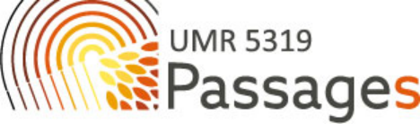

DESENVOLUPAMENT
PUBLICACIONS
* Mendoza, C. (2023) “International immigration and entrepreneurship in rural areas of the Spanish Pyrenees”. Hungarian Geographical Bulletin, 72 (2), 119-131.
* Morén-Alegret, R.; Milazzo, J.; Romagosa, F. & Kallis, G. (2021) “‘Cosmovillagers’ as Sustainable Rural Development Actors in Mountain Hamlets? International Immigrant Entrepreneurs’ Perceptions of Sustainability in the Lleida Pyrenees (Catalonia, Spain)”, European Countryside Journal, 13(2), 267-296
* Morén-Alegret, R. & Mendoza, C. (2021) “Inmigración internacional y sostenibilidad en pueblos pequeños. Retos y oportunidades económicas, ambientales y sociales en el Alt Empordà (Cataluña, España)”, Revista Internacional de Estudios Migratorios, 11(2), pp. 1-35
* Mendoza, C.; Morén-Alegret, R. & McAreavey, R. (2020) “(Lifestyle) immigrant entrepreneurs in Spanish small villages: Rethinking international immigration in rural Alt Empordà, Catalonia”, BELGEO. Belgian Journal of Geography, 1
* Mendoza, C.; Morén-Alegret, R. & McAreavey, R. (2020) “Emprendimiento e inmigración internacional en áreas rurales de España”, Investigaciones Geográficas (Instituto de Geografía de la UNAM), DOI: dx.doi.org/10.14350/rig.60172
* Romagosa, F., Mendoza, C.; Mojica, L. & Morén-Alegret, R. (2020) “Inmigración internacional y turismo en espacios rurales. El caso de los "micropueblos" de Cataluña”. Cuadernos de Turismo, 46, 319-347
DIFUSIÓ A CONGRESSOS I ACTES ACADÈMICS
* Mendoza, C. & Morén-Alegret, R. (2022) “Inmigración internacional y mercados de trabajo rurales en los Pirineos de Aragón y Cataluña”. X Congreso de Migraciones en España. Madrid: Instituto Universitario Ortega y Gasset & Universidad Autónoma de Madrid, 14-16/09/2022.
* Mendoza, C. & Morén-Alegret, R. (2022) “Sustainable rural development and international immigrant entrepreneurs in Girona Pyrenees (Spain)”. 2022 International Geographical Union (IGU). París: Université de la Sorbonne, 18-22/07/2022.
* Mendoza, C. (2022) “Local developments and international immigration in the Pyrenees”. EUGEO 9è Congrés. Barcelona: Institut d´Estudis Catalans & Universitat de Barcelona, 4-7/09/2023.
COMUNICACIÓ VIA TWITTER
Des de juny de 2017, en el marc del projecte de recerca aplicada 'HAMLETS. Immigració i desenvolupament sostenible als micropobles' (2017-2020) i “SURDIM. Desenvolupament rural sostenible i immigració internacional als Pirineus (2021-2023), es publiquen, amb ànim divulgatiu, tweets amb algunes dades demo-geogràfiques i fotos il·lustratives dels municipis amb menys de 2000 habitants de l'àrea d'estudi. Aquestes imatges posteriorment es vincularan al Sistema d’Informació Geogràfica (GISASH) que s'està desenvolupant a la UAB. Els hashtags principals són #HAMLETS #SURDIM i els comptes de Twitter que podeu seguir per anar rebent informació del projecte són @RicardMoren i @CMendozaPerez.
SIG SURDIM-HAMLETS
Durant la realització del projecte SURDIM (2021-2023), el SIG desenvolupat en el marc del projecte HAMLETS (2017-2020) s'ha mantingut en el servidor de la UAB. Es tracta d'un SIG centrat en àrees rurals, d'accés públic, que ha permès la publicació i difusió de dades sociodemogràfiques dels municipis rurals, i també informació diversa, com són els diferents serveis que ofereixen aquests municipis.
Aquest SIG és una mostra de les diferents eines que permeten posar els municipis rurals al mapa i que podria ampliar-se en futurs projectes.. Aquest Sistema d'Informació Geogràfica (conegut com a GISASH, per les seves sigles en anglès), que es nodreix de les dades estadístiques procedents dels organismes oficials (IDESCAT, INE, EUROSTAT...), compta amb diverses dimensions, incloent-hi informació sobre serveis, bibliografia, mapes, pàgines web, fotografies procedents de treball de camp i una enquesta realitzada per la UAB.
El GISASH ha estat desenvolupat i està allotjat a la UAB gràcies al finançament del Programa RECERCAIXA per al període 2017-2020 (una iniciativa de l'Associació Catalana d'Universitats Públiques i la Fundació 'la Caixa'), al finançament del Grup de Recerca sobre Economia Ecològica de la UAB, 2021-2022 (ECONECOL, ref. SGR-1126, AGAUR 2017-2021), a la Unió Europea, període 2022-2023 (projecte SURDIM) i al Grup de Recerca sobre Economia Ecològica de la UAB el 2023-2025 (ECONECOL, AGAUR 2023-2025). Vegeu:
http://atlantis.uab.cat/hamlet/public?request_locale=ca#
ORGANITZACIÓ D´ACTES ACADÈMICS
* Sessió Immigrant entrepreneurship, international mobilities and sustainable local development in rural areas. Commission “Global Change and Human Mobility”. Unió Geogràfica Internacional , IGU. Paris: Université de la Sorbonne, 18-22/07/2022. See: https://www.ugiparis2022.org/
* De febrer a maig de 2022, el Dpt. de Geografia i l´ICTA, de la Universitat Autònoma de Barcelona (UAB-GEO-GRM) van organitzar el 18th GRM Seminar Series on Migration (18è Cicle de Seminaris sobre Migracions del GRM). Aquests seminaris van incloure algunes sessions que van tractar, de forma directa o indirecta, temàtiques relacionades amb els Pirineus.
- 17 febrer 2022, 13h, Dr Raúl Lardiés, Universidad de Zaragoza, Espanya: Foreign immigration from outside the EU in rural areas of Aragón: impacts and integration
- 21 març 2022, 13h, Dr Montserrat Feixas, UNHCR in Central Europe from 2013 to 2021, Hungary: Asylum challenges in Central Europe. The 2015 crisis and its consequences
- 28 abril 2022, 13h, Dr Valeria Bello, Universitat Ramon Llull, URL, Espanya: The role of prejudice and cognitions in the governance of international migration
- 12 maig 2022, 13h, Dr Kevin Mary, Université de Perpignan Via Domitia, França: Migration-facilitating capital: Attracting and (socially) selecting African students for Canada.
ESTADA DE RECERCA

Cristóbal Mendoza va realitzar una estada de recerca a Bordeus (Nova Aquitània. França), en el laboratori Passages del Centre Nacional de la Recerca Científica francès (Centre National de la Recherche Scientifique, CNRS); laboratori que està associat a la Université de Bordeaux-Montaigne, Université de Bordeaux, i a l´École Nationale Supérieure d’Architecture et de Paysage, també de la ciutat de Bordeus, Durant aquesta estada, l´investigador del projecte SURDIM va realitzar una visita científica a MIGRINTER, un laboratori del CNRS especialitzat a temes de migració i relacions ètniques, que està associat a les universitats de Poitiers i Bordeaux. Els objectius d´aquesta estada van ser la recerca bibliogràfica, l´intercanvi acadèmic i l´explotació de dades estadístiques. A més de Bordeus i Poitiers, es van contactar els col·legues de la Université de Pau et des Pays de l'Adour, de cara a la planificació del treball de camp a la regió Hautes Pyrénées.
MAPES
Població


.png)
.png)
.png)
Població per sexe i grups d'edat


.png)
Població nascuda a l'estranger
.png)
.png)
.png)
.png)
.png)
.png)
.png)
Estrangers
.png)
.png)
.png)
.png)